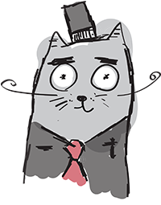
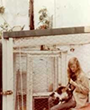
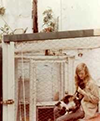

HISSSTORIE
De Poezenboot werd in 1966 opgericht door Henriette van Weelde. Zij begon met het opvangen van zwerfkatten nadat ze een dakloos katje vond in de buurt van haar huis. Al snel verspreidde het nieuws zich, en meer katten kwamen naar haar toe.
 
